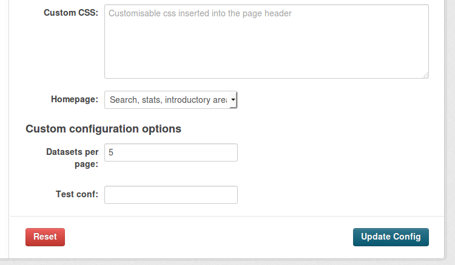

Making configuration options runtime-editable¶
Extensions can allow certain configuration options to be edited during runtime, as opposed to having to edit the configuration file and restart the server.
Warning
Only configuration options which are not critical, sensitive or could cause the CKAN instance to break should be made runtime-editable. You should only add config options that you are comfortable they can be edited during runtime, such as ones you’ve added in your own extension, or have reviewed the use of in core CKAN.
Note
Only sysadmin users are allowed to modify runtime-editable configuration options.
In this tutorial we will show how to make changes to our extension to make two configuration options runtime-editable: ckan.datasets_per_page and a custom one named ckanext.example_iconfigurer.test_conf. You can see the changes in the example_iconfigurer extension that’s packaged with CKAN. If you haven’t done yet, you should check the Writing extensions tutorial first.
This tutorial assumes that we have CKAN running on the paster development server at http://localhost:5000, and that we are using the API key of a sysadmin user.
First of all, let’s call the config_option_list() API action to see what configuration options are editable during runtime (the | python -m json.tool bit at the end is added to format the output nicely):
curl -H "Authorization: XXX" http://localhost:5000/api/action/config_option_list | python -m json.tool
{
"help": "http://localhost:5000/api/3/action/help_show?name=config_option_list",
"result": [
"ckan.site_custom_css",
"ckan.main_css",
"ckan.site_title",
"ckan.site_about",
"ckan.site_url",
"ckan.site_logo",
"ckan.site_description",
"ckan.site_intro_text",
"ckan.homepage_style",
"ckan.hola"
],
"success": true
}
We can see that the two options that we want to make runtime-editable are not on the list. Trying to update one of them with the config_option_update() action would return an error.
To include them, we need to add them to the schema that CKAN will use to decide which configuration options can be edited safely at runtime. This is done with the update_config_schema() method of the IConfigurer interface.
Let’s have a look at how our extension should look like:
# encoding: utf-8
import ckan.plugins as plugins
import ckan.plugins.toolkit as toolkit
class ExampleIConfigurerPlugin(plugins.SingletonPlugin):
plugins.implements(plugins.IConfigurer)
# IConfigurer
def update_config_schema(self, schema):
ignore_missing = toolkit.get_validator('ignore_missing')
is_positive_integer = toolkit.get_validator('is_positive_integer')
schema.update({
# This is an existing CKAN core configuration option, we are just
# making it available to be editable at runtime
'ckan.datasets_per_page': [ignore_missing, is_positive_integer],
# This is a custom configuration option
'ckanext.example_iconfigurer.test_conf': [ignore_missing, unicode],
})
return schema
The update_config_schema method will receive the default schema for runtime-editable configuration options used by CKAN core. We can then add keys to it to make new options runtime-editable (or remove them if we don’t want them to be runtime-editable). The schema is a dictionary mapping configuration option keys to lists of validator and converter functions to be applied to those keys. To get validator functions defined in CKAN core we use the get_validator() function.
Note
Make sure that the first validator applied to each key is the ignore_missing one, otherwise this key will need to be always set when updating the configuration.
Restart the web server and do another request to the config_option_list() API action:
curl -H "Authorization: XXX" http://localhost:5000/api/action/config_option_list | python -m json.tool
{
"help": "http://localhost:5000/api/3/action/help_show?name=config_option_list",
"result": [
"ckan.datasets_per_page",
"ckanext.example_iconfigurer.test_conf",
"ckan.site_custom_css",
"ckan.main_css",
"ckan.site_title",
"ckan.site_about",
"ckan.site_url",
"ckan.site_logo",
"ckan.site_description",
"ckan.site_intro_text",
"ckan.homepage_style",
"ckan.hola"
],
"success": true
}
Our two new configuration options are available to be edited at runtime. We can test it calling the config_option_update() action:
curl -X POST -H "Authorization: XXX" http://localhost:5000/api/action/config_option_update -d "{\"ckan.datasets_per_page\": 5}" | python -m json.tool
{
"help": "http://localhost:5001/api/3/action/help_show?name=config_option_update",
"result": {
"ckan.datasets_per_page": 5
},
"success": true
}
The configuration has now been updated. If you visit the main search page at http://localhost:5000/dataset only 5 datasets should appear in the results as opposed to the usual 20.
At this point both our configuration options can be updated via the API, but we also want to make them available on the administration interface so non-technical users don’t need to use the API to change them.
To do so, we will extend the CKAN core template as described in the Customizing CKAN’s templates documentation.
First add the update_config() method to your plugin and register the extension templates folder:
# encoding: utf-8
import ckan.plugins as plugins
import ckan.plugins.toolkit as toolkit
class ExampleIConfigurerPlugin(plugins.SingletonPlugin):
plugins.implements(plugins.IConfigurer)
# IConfigurer
def update_config(self, config):
# Add extension templates directory
toolkit.add_template_directory(config, 'templates')
def update_config_schema(self, schema):
ignore_missing = toolkit.get_validator('ignore_missing')
is_positive_integer = toolkit.get_validator('is_positive_integer')
schema.update({
# This is an existing CKAN core configuration option, we are just
# making it available to be editable at runtime
'ckan.datasets_per_page': [ignore_missing, is_positive_integer],
# This is a custom configuration option
'ckanext.example_iconfigurer.test_conf': [ignore_missing, unicode],
})
return schema
Now create a new file config.html file under ckanext/yourextension/templates/admin/ with the following contents:
{% ckan_extends %}
{% import 'macros/form.html' as form %}
{% block admin_form %}
{{ super() }}
<h3>Custom configuration options </h3>
{{ form.input('ckan.datasets_per_page', id='field-ckan.datasets_per_page', label=_('Datasets per page'), value=data['ckan.datasets_per_page'], error=errors['ckan.datasets_per_page']) }}
{{ form.input('ckanext.example_iconfigurer.test_conf', id='field-ckanext.example_iconfigurer.test_conf', label=_('Test conf'), value=data['ckanext.example_iconfigurer.test_conf'], error=errors['ckanext.example_iconfigurer.test_conf']) }}
{% endblock %}
{% block admin_form_help %}
{{ super() }}
<p><strong>Datasets per page:</strong> Number of datasets displayed in dataset listings (eg search page).</p>
<p><strong>Test conf:</strong> An example configuration option, set from an extension.</p>
{% endblock %}
This template is extending the default core one. The first block adds two new fields for our configuration options below the existing ones. The second adds a helper text for them on the left hand column.
Restart the server and navigate to http://localhost:5000/ckan-admin/config. You should see the newfields at the bottom of the form:
Updating the values on the form should update the configuration as before.